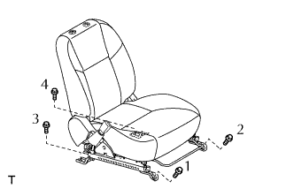

CỤM ĐAI BÊN NGOÀI GHẾ TRƯỚC > LẮP |
| 1. LẮP BỘ ĐIỀU CHỈNH MÓC ĐAI VAI PHÍA TRƯỚC |
Cắm đầu của bộ điều chỉnh vào trụ, và gióng thẳng loa bulông của bộ điều chỉnh vào lỗ bulông của trụ.
Lắp bulông như trong hình vẽ.
| 2. LẮP NẮP CHE TẤM MÓC ĐAI VAI |
Lắp nắp như trong hình vẽ.
| 3. LẮP TRANG TRÍ TRỤ XE GIỮA BÊN TRÁI |
Cài khớp vấu và kẹp để lắp miếng ốp trang trí.
| 4. LẮP CỤM ĐAI NGOÀI GHẾ TRƯỚC TRÁI |
Gióng thẳng các vấu với lỗ định vị của đai an toàn và lắp bộ cuốn của đai an toàn ngoài bằng bulông như trong hình vẽ.
Nối đai an toàn ngoài bằng bulông móc vai.
Cài khớp 4 vấu để lắp nắp của móc đai an toàn hông bên ngoài.
| 5. LẮP ỐP TRANG TRÍ TRỤ XE GIỮA PHÍA DƯỚI BÊN TRÁI |
Nối móc của đai an toàn ngoài với bulông lắp sẵn sau khi lắp tấm ốp trang trí trụ giữa.
Cài khớp 2 vấu để lắp nắp của móc đai an toàn hông bên ngoài.
| 6. LẮP GIOĂNG CỬA SAU TRÁI |
| 7. LẮP TẤM ỐP BẬU CỬA SAU TRÁI |
 |
Cài khớp 3 kẹp và 7 vấu để lắp ốp bậu cửa.
| 8. LẮP GIOĂNG CỬA TRƯỚC TRÁI |
| 9. LẮP TẤM ỐP BẬU CỬA TRƯỚC TRÁI |
 |
Cài khớp 3 kẹp và 7 vấu để lắp ốp bậu cửa.
| 10. LẮP CỤM GHẾ TRƯỚC TRÁI |
Hãy để ghế vào trong cabin.
w/ Hệ thống cảnh báo đai an toàn:
Lắp giắc nối phía dưới ghế.
|  |
Lắp ghế bằng 4 bu lông.
| 11. LẮP CÁP VÀO CỰC ÂM ẮC QUY |
| 12. TIẾN HÀNH THIẾT LẬP BAN ĐẦU |
Tiến hành thiết lập ban đầu (Xem trang Kích chuột vào đây).